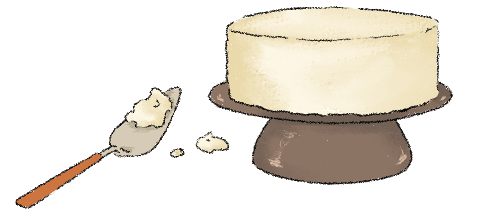

Vigorous writing is concise. A sentence should contain no unnecessary words, a paragraph no unnecessary sentences, for the same reason that a drawing should have no unnecessary lines and a machine no unnecessary parts. This requires not that the writer make all his sentences short, or that he avoid all detail and treat his subjects only in outline, but that every word tell.
Many expressions in common use violate this principle:
| * | |
| the question as to whether | whether (the question whether) |
| there is no doubt but that | no doubt (doubtless) |
| use for fuel purposes | used for fuel |
| he is a man who | he |
| in a hasty manner | hastily |
| this is a subject which | this subject |
| His story is a strange one. | His story is strange. |
In especial the expression the fact that should be revised out of every sentence in which it occurs.
| * | |
| owing to the fact that | since (because) |
| in spite of the fact that | though (although) |
| call your attention to the fact that | remind you (notify you) |
| I was unaware of the fact that | I was unaware that (did not know) |
| the fact that he had not succeeded | his failure |
| the fact that I had arrived | my arrival |
See also under case, character, nature, system in Chapter V.
Who is, which was, and the like are often superfluous.
* His brother, who is a member of the same firm
His brother, a member of the same firm
* Trafalgar, which was Nelson's last battle
Trafalgar, Nelson's last battle
As positive statement is more concise than negative, and the active voice more concise than passive, many of the examples given under Ruile 11 and 12 illustrate this rule as well.
A common violation of conciseness is the presentation of a single complex idea, step by step, in a series of sentences which might to advantage be combined into one.
* Macbeth was very ambitious. This led him to wish to become king of Scotland. The witches told him that this wish of his would come true. The king of Scotland at this time was Duncan. Encouraged by his wife, Macbeth murdered Duncan. He was thus enabled to succeed Duncan as king. (55 words.)
Encouraged by his wife, Macbeth acheived his ambition and realized the prediction of the witches by murdering Duncan and becoming king of Scotland in his place. (26 words.)